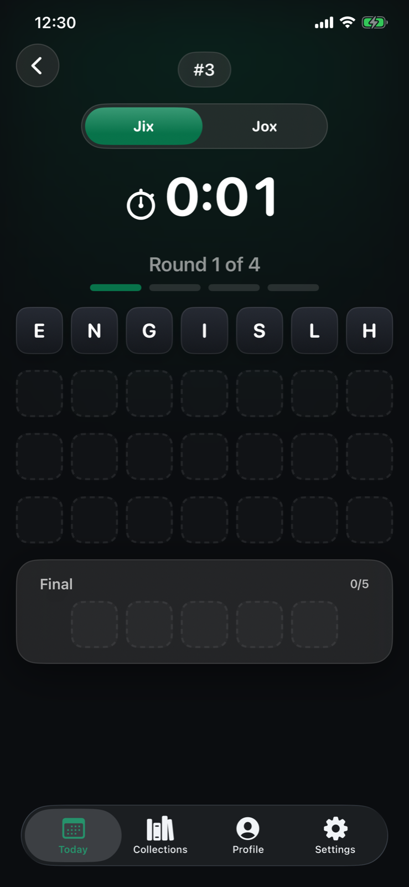

Jix
Put every letter in its place
Unscramble four rounds, read the tile feedback, and bank the letters that lead to the Final.
- 1Move letters into the answer row
- 2Use locked and outlined tiles as feedback
- 3Solve the Final and complete the day